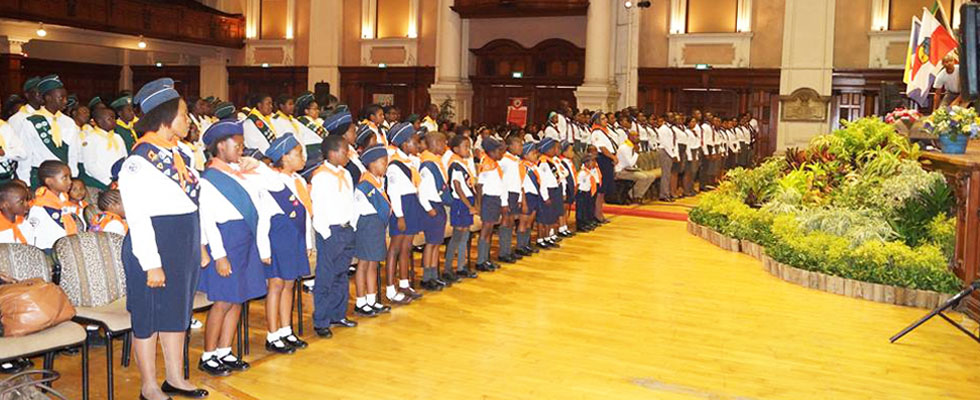
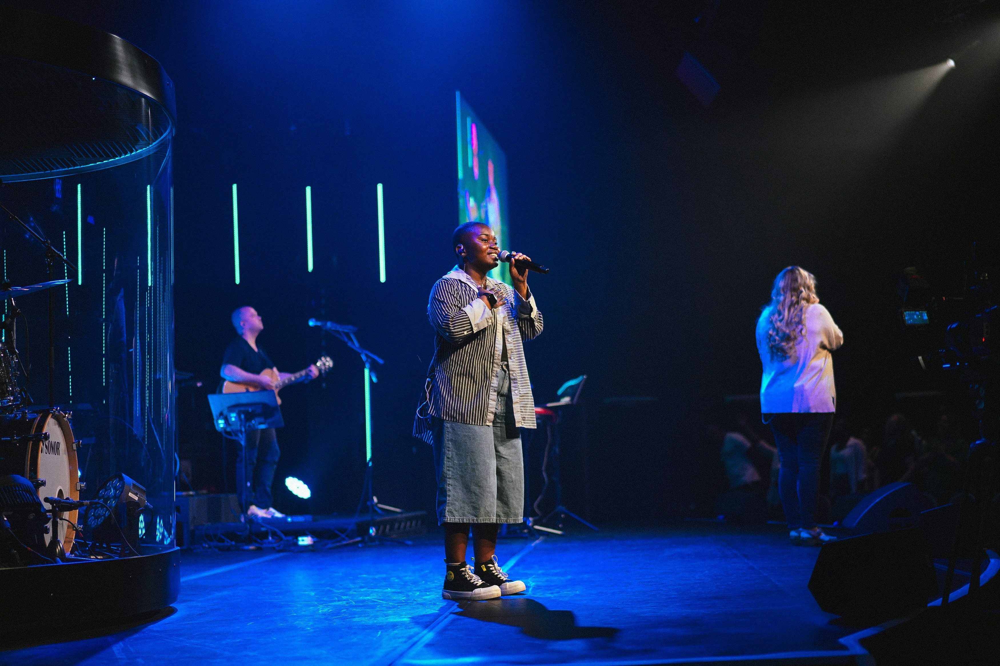
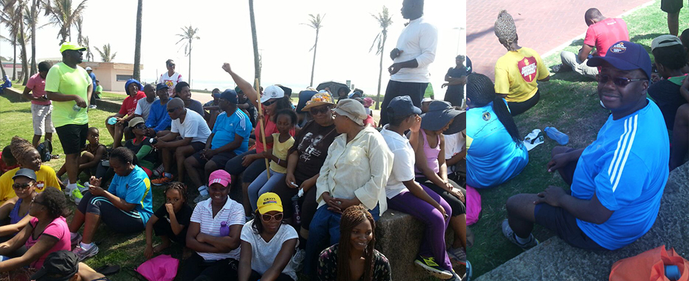
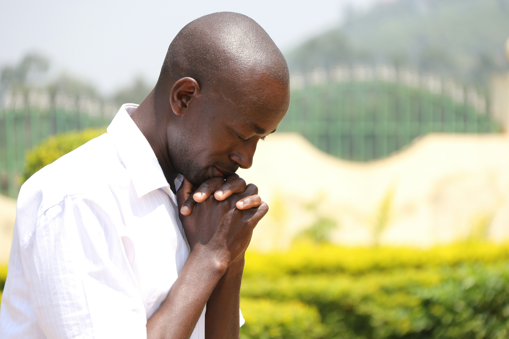
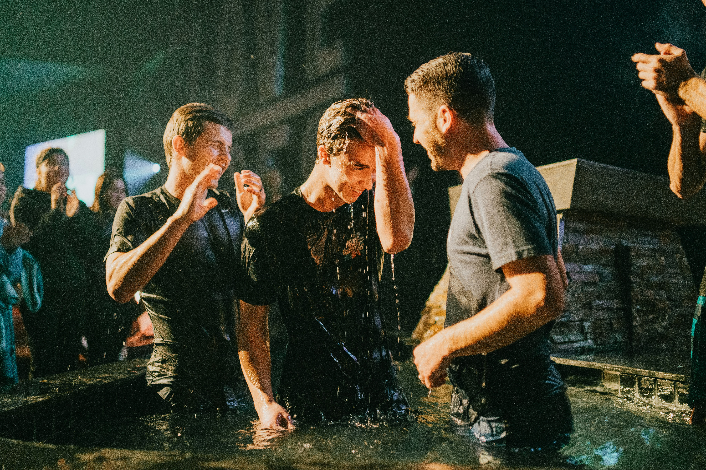

Children's Ministry
Fun, faith-filled Sabbath School classes that help kids build a real friendship with Jesus.
Learn more →Worship with us and become part of our church family. Whether you're new to faith, new to Durban, or just looking for a church home, there's a seat for you.

Saturdays, 9:00 – 10:15 AM
Bible study for all ages
Saturdays, 10:30 AM – 12:30 PM
Worship, music & message
Wednesdays, 6:00 – 7:00 PM
Midweek prayer & devotion
38 Keits Avenue, Berea, Durban
Parking available on-site
For decades, Durban Central SDA Church has been a home for people seeking to know God and grow together as a community. We believe in the soon return of Jesus Christ, and we try to live that hope out through worship, service, and genuine friendship.
Come as you are. Our doors — and our hearts — are open to visitors, longtime members, and anyone still figuring out what they believe.
A few of the ways our members connect, serve, and grow.
Fun, faith-filled Sabbath School classes that help kids build a real friendship with Jesus.
Learn more →
Adventure, mentorship, and character-building for children, tweens and teens.
Learn more →
Choir, praise team and instrumentalists leading the congregation in worship each week.
Learn more →Food parcels, clothing drives and ADRA-supported outreach to families in need around Durban.
Learn more →
Cooking classes, wellness talks and health screenings rooted in a whole-person approach to health.
Learn more →
A team of intercessors ready to pray with you over any need, big or small.
Learn more →Can't make it in person? Join our Divine Service live every Saturday at 10:30 AM SAST, streamed straight from our sanctuary to wherever you're watching.
There are no upcoming events listed right now. Check back soon or get in touch to hear what's next.

Saturday, October 18, 2026 | 10:30 AM – 12:30 PM
Find Out More"I walked in not knowing a single person and left with a whole church family. Everyone made room for me."
Thandiwe M. — Member since 2019
"The Bible study groups helped me actually understand Scripture, not just read it. It changed how I pray."
Sipho N. — Member since 2021
"Pathfinders gave my kids friends, discipline, and a real love for the outdoors and for God."
Naledi K. — Parent
"Come unto me, all ye that labour and are heavy laden, and I will give you rest."
Matthew 11:28, KJV
Our prayer team would be honoured to stand with you. No request is too big or too small.
Submit A Prayer RequestYour tithes and offerings sustain our ministry and outreach here in Durban.
Address: 38 Keits Avenue, Berea, Durban
Phone: +27 74 954 8080
Email: info@durbancentralsda.org
Sabbath School: 9:00 AM | Divine Service: 10:30 AM
First time with us? Read what to expect.
Get Directions